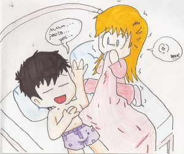
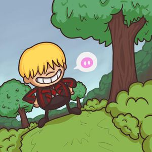
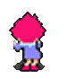
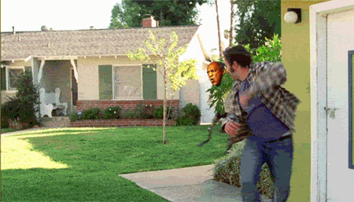

MOTHER
 De: La Frikipedia, la enciclopedia extremadamente seria.
De: La Frikipedia, la enciclopedia extremadamente seria.
De la serie Videojuegos:
MOTHER

| Desarrollado por:
|
Shigesato itoi/Laboratorios me laHALo
|
| Distribuido por:
|
Noentiendo
|
| Diseñado por:
|
Shigesato itoi y otros pendejos
|
| Motor
|
Rummm rummmmmm
|
| Género(s)
|
RPG (Reno payaso griton)
|
| Fecha de lanzamiento:
|
1994(Japoneses cabrones)/1995(Gringos)
|
| Modos de juego:
|
Nuevo juego y configurar idioteces como el color de las menus.
|
| Requisitos:
|
Tener una consola NES,SNES Y GBA, tambien saber contar hasta 8 y no llorar por gilipolleces hasta el final
|
| Disponible en:
|
Tiendas
|
| Formatos:
|
Cartucho
|
| Edades:
|
199XXX
|
| Puntuaciones:
|
6/10
|
Una saga RPG de las mas emocionales (creo)
En realidad, MOTHER cuenta una trama de ciencia ficción que pudiera considerarse algo oscura y triste, pero nunca se toma en serio ni por la puta madre del diseñador. Esto crea una especie de contraste metrosexual. La historia tiene sus segmentos gays ,tristes y de miedo que pueden darle diarrea cerebral y cronica, sobre todo en la última parte. También en ocasiones, suele volverse un poco cruel y malpensado con los acontecimientos y eventos que uno tiene que presenciar, por eso el lema del juego fue "No llorar sino hasta el final" y su otro lema hecho por un fanboy posero de MOTHER fue "¿Quien dijo que MOTHER es solo para niños?", ademas este juego lo hicieron para hacer tributo a KAGADA CORPORATION.
Earthbound Zero/Mother
Historia
El comienzo de MOTHER se encuentra en la ciudad de Popo Borracho. Una noche, un fantasma aparece en la casa de Ninten y toma el control de varios artículos del hogar. El caos aumenta cuando Ninten pelea con una muñeca poseída sin ropa, ¡Que malpensados!. Ninten trae como un consolador como arma antes de viajar en la zona rural de Popó Borracho.Luego van a reunir las 8 melodias que su abuela cantaba con un tan guigue al metersela todas las noches como el quería para que durmiera feliz y no se pusiera a cantar Regayton loco y matara a todos. Pero las 8 melodías sirven para salvar al mundo y hacer a ninten a sus compañeros sexuales amigos mas fuertes.
En el camino, se encuentra la madre de una niña llamada Pippi, que al parecer está violada (la mencionada Pippi es en realidad Pippi Calzaslargas la subnormal de la epoca telecinquil). Al llegar a Popo Borracho, Ninten se reúne con el alcalde qliao, el jefe de Popo Borracho, quien se está preparando para volver a presentarse a las elecciones. Al presentarse como héroe de la ciudad, obtiene el voto en su favor. Debido a ello, Ninten se enrola como ayudante a la policía para buscar a Pippi.
Earthbound/Mother 2
Historia
Se trata de cuatro pendejos niños llamados Ness, Paula, Jeff y Poo que fueron informados por un marciano metrosexual que cayó de un meteroro en forma de abejorro gordo con pico chico llamado Buzz Buzz que ellos son los elegidos, pero un niño gordo con pico grande y con chasquilla que tapa sus feos ojos de pezcado llamado Pokey Minch que se encabronó por no ser uno de los elegidos y dijo: "¿Porque no soy parte de estos asuntos sobre sexo alienigena?", ademas Pokey tuvo un hermano menor que es más maduro que Pokey, si Pokey es tán pobre, es porque tuvo un mal padre qliao llamado Aloysus Minch que le dio toda la cantidad de dinero sucio que lo ha juntado toda en su puñetera vida a la familia de Ness el necio, de vez en cuando el odia a sus hijos rubios con chasquillas (Son Pokey y Picky los niños qliaos rubios con chasquillas con pico grande) porque se pelean por cualquier gilipollez, como sea, Ness y sus amigos tienen poderes decerebrados psiquicos llamados "PSI" que significa realmente "Poder Sexual Interno" que lo usan para violar a los extraterrestres metrosexuales y a la destructora prostituta homosexual llamado Giygas, este juego es lo mismo que de Zelda, solo que en lugar de usar espadas y armaduras, usan ropas deportivas, resolteras, palos de hockey u otras cosas de mocosos malcriados, ademas el final es puñeteramente sobre el fin del mundo
Personajes de Earthbound/Mother 2
Ness "Necio": Es el prota del juego, su comida favorita es el Bistec, le gusta mucho el beisbol, tiene 13 años, en batallas es un poco rapido, sus pocos poderes del PSI son poderosos, su arma principal es el bate de beisbol, de bebé vio una vision del pasado sabien que su pasado es su destino de ser el puto, sensual, musculoso y alto heroe de Onett, es el doble qliao de Ninten, su nombre Ness es un puto acertijo de palabrotas de las iniciales SNES, una vez se desnudó en un mundo qliao colorido.
 Ness tratando de conquistar a su amiga Paula
Paula "Polla" Polestar: La segunda que se une al equipo. En algunas ocasiones se mete en apuros y hay que ir a rescatarla de cualquier gilipollez. Vive en una casa que también es jardín de infancia. Paula puede tener contacto telepático con otras personas y predecir el futuro de mierda, lo malo es que tambien puede tener contacto con hombres sexys y altos. Siempre carga un oso de con relleno de marihuana peluche. En la batalla es rápida, débil físicamente, pero con poderes psíquicos ofensivos poderosos y como arma principal utiliza una sartén.
Jeff "Drogata" Andronuts: A diferencia del resto del equipo, éste no tiene poderes psíquicos, en cambio es muy cerebrito: es capaz de arreglar cosas y de hacer herramientas útiles tanto para batalla como para la aventura. En batalla es algo más veloz que Ness y tiene buena resistencia. Como habilidad en batalla tiene "Espiar" (Spy), que nos dice las debilidades a los "Poder Sexual Interna" y todas las estadísticas del enemigo. Su principal arma son las pistolas, ademas el tambien tuvo una multa por tomar drogas que dañan su cerebrito, por eso se hace tán superdrogado digo subnormal.
 Pokey riendose despues de abandonar a su padre irresponable
Poo "Calvo con pelo de bebé": Poo es un príncipe karateca que vive en Dalaam (un reino encimado en una nube sobre la playa de Summers), admirado por todas las chicas prostitutas del lugar. Él sigue el entrenamiento Mu, un arte marcial. Sin embargo, puede aprender PSI StarStorm, un poder psíquico ofensivo muy poderoso. Su principal "arma" son las manos desnudas, aunque se le puede equipar con una espada llamada "Espada de los Reyes" oculta en el juego, haciéndole muy poderoso, el realmente es más marica que un palomo cojo.
Pokey "Verga grande" Minch: Es un gordo de la puta familia que tiene un malparido padre que fue tan pajarón al darle la pasta a la familia de "Ness-cio", no solamente quería follarse a Gigyas, ademas el fue tambien el "PUTO AMO" de Mother 3, donde hace tambien unos robots identicos al puto pokey ese, se cambia el nombre a "Porky" por tener una polla grande qliada por comer tanto queso, este ahuevonado es hermano gemelo perdido del puto nerd llamado Reynaldo de Kick Putowski. Ademas trabajó tambien en KAGADA CORPORATION.
Giygas: Es reconocido como el más perturbador y misterioso "PUTO AMO" del videojuego MOTHER, tiene su plan de destruir la Tierra, ademas si lo derrotás, dejará una enorme huella de su pie hediondo en una colina de Onett, pero Gigyas no es hombre, es una prostituta con cuerpo de Mewtwo o Freezer pero más deforme y más puta.
Earthbound 2/Mother 3
Epílogo
Este es el juego mas mamavergas,traumatizante,marica y zoofilico de toda la saga pues se trata de un maricon llamado lucas que jugaba con su hermano llamado santa claus que le enseña a violar patear a un pinche dinosaurio verde llamado yoshi drago,entonces cuando acaban de tocarse las bolas jugar van a la casa a cenar porque su mama los llama pero su puta madre que se llamaba hawaiana hinawa ve una nave con forma de verga chancho y entonces suena una musiquita gay y asi comienza la historia.
Historia
 kumatora trantando de seducir al jugador
- La noche del funeral: Un tipo maricon se va gritando como niña que se incendio el bosque ,entonces
finn Flint el baquero va al incendio entonces en el camino un bicho le recomienda bañarse en aguas termales pues dice que le restaura la vida luego de eso sigue , encuentra a unos gays que se la estan metiendo cientificos con cara de cerdo pero no le interesa luego encuentra a un tipo que fue atacado por unos quimera al parecer luego encuentra a Combustible que habia sido dejado por su padre pensando que estaria a salvo (si claro se incendia el bosque y es seguro una casa altamente flamable) pero entonces una cosa metrosexual que es la fusion de una rata y una mosca los ataca tiene una pelea al mas estilo pokemon pero luego flint gana ,luego de eso vuelve con sus amigos que luego vuelven para ver que un puto tronco bloquea el camino pero tambien notan unas pinches garras que han sido hechas por wombats,luego de que sacaran el tronco flint crea una escalera por el culo para subir entonces arriba se encuentran con un alce pero habia una cualidad de que los mismos cara de cerdo de antes lo tenian en una maquina entonces luego lo electrocutan ,luego este cobra vida ,lo derrotan luego van por los cara de cerdo pero estos escapan en su nave con forma de pene cerdo ,luego vuelven y se entera de que encontraron a sus hijos lucas y claus pero sin embargo le dicen que su esposa era una zoofilica pero se quizo violar un drago y este la mato tambien encontraron su colmnillo encontraron un diente de drago y que este es lo unico que les puede hacer daño a parte de Chuck Norris y un wombat y luego le dicen una mala noticia que donde hallaron el pinche diente es en el pene corazón de su esposa ,al enterarse eso se vuelve loco y empieza a golpear a un granjero y luego lo nockean con un ramo de flores un tronco y luego aparece en la carcel,luego en la carcel viene el marica de claus y le da una manzana el la muerde se da cuenta de que hay una lima (como coño entra una lima en una manzana) y escapa se va al funeral de hinawa y se entera de el el bisexual claus se fue a matar al drago y que lucas lo dejo entonces encabronado golpea a lucas y va en busca de claus luego se encuentran con unos violadores de niños gays llamados magypsis y que le dieron unos poderes PSI a lucas tambien encuentra al abuelo de lucas ,con el van a enfrentar a drago cuando lo encuentran se da cuenta de que el drago esta reconstruido(igual que Frezeer) ahora se llama mecha drago ,entonces lo derrota con el colmnillo que se roba al salir de la carcel entonces cuando esta apunto de matarlo ,viene una cosa verde ,el abuelo cree que es su hijo ,le dice que la venganaza no soluciona nada excepto para un emo entonces como flint no quiere ser emo deja vivir a mecha drago,entonces se muestra que claus se resbalo de la pinche colina ,que esta semi-muerto,luego aparecen unas palabras en japones asi termina el capitulo
Mission imposible El castillo osohe:Habia un tio en la aldea llamado duster que sueña con ser ladron (pero que coño) entonces su abuelo le da armas de ladron ,se supone que le deberia dar armas reales pero el pinche abuelo es tan tacaño que solo le dan unas engrampadoras,una mascara que asusta a homosexuales (por eso funciona con todos),una libreta,una revista porno,porros,un poco de marihuana,pañal para adultos .Con eso va a robar un tal huevo de la luz ,entonces va al castillo que esta lleno de fantasmas que son amigablemente maricones ,luego duster tiene que comprar un Pokemon llamado serpiente cuerda con la que puede pasar el hueco , luego encuentra una clase de puta que se le perdio el arete ,luego la alcanzan le dice que se llama kumatora ,que tiene un monton de poderes (unicamente por eso es el unico personaje util del capitulo),luego encuentran a un fantasma plageador de betowen ,pero plagea tan mal que duster dice que su musica es una mierda,entonces se molesta ,los ataca ,es vencido(para que tengo que decirlo) ,luego cuando encuentran el huevo de la luz caen a una trampa donde esta una serpiente marina bien fea ,la vencen pero luego salen de la trampa entonces aparecen en la playa nudista pero hay un pequeño detalle el gay de duster no esta y que desaparecio ,asi termina este capitulo.- Musulman y su mono:
En la nave gigante con forma de cerdo sale unos cara de cerdo ,unos 2 monos y un musulman y entonces empieza a golpear al marginado mono este chango se llamaba salsa y secuestraron a su novia y le pusieron un collar electrico ,entonces se van y salsa tiene que hacer todo lo que diga ese musulman y entonces van a la ciudad y musulman se duerme entonces por la ventana kumatora lo libera luego aparece musulan y su ejercito ,pero estos son vencidos cuando lucas llega con unos drago y asi termina el capitulo.
El bar gay DCM:Han pasado 4 años ,aqui lucas sale de su casa con su perro boney el cual es un perro que habla (plagio de disney) y se van a hacer muchas mariconadas como pasar el tunel de un tren que todavia funciona ,en medio del camino se encuentran con un maricon este le enseña poderes PSI pero lucas adquiere el PK amor o haxxxxxxxxxxxxxxxxxxxxxxx con este puede sacar unas tales agujas y luego de pasar por eso van a un bar gay en donde kumatora es una camarera entonces le dice a lucas que suba por una escalera a la asotea que esta llena de bichos raros ,quimeras y unos instrumentos vivientes y luego se encuentra con el grupo los wachiturros DCM en el que esta duster pero no recuerda nada entonces le hace una apuesta a DCM y gana y duster se va con la banda y asi termina el capitulo- La torre de trueno:Cuando salen del bar van a donde duster dejo el huevo de la luz resulta que lo dejo en un muñeco de arcilla que ni ingle tiene entonces cuando lo encuentran cae un relampago y se va corriendo como drogado y lo persiguen por un camino en donde hay muchisimas quimeras y este muñeco entra en una fabrica de muñecos de arcilla ,lucas trabaja alli por que necesita dinero y luego el muñeco escapa a un camion de basura y cuando van al basurero este se derrite y llega un nuevo muñeco de arcilla pero esta muy ediondo hecho de basura lo vencen y duster recuerda la memoria ,si el jugador quiere vuelven al castillo osohe para conseguir una botas muy gays ,pero entonces en la torre de trueno hay varios quimera,
putas, robots ,cientificos y cuando llegan a el area de juegos si el jugador quiere se enfrentan a una niñera robot luego de eso llegan a un lugar en donde un robot guardia los ataca y al vencerlo la torre empieza a destruirse luego aparece musulman que los persigue luego al subir las escaleras musulman llega y les dice que los atrapo y se come una banana con la cual se resbala y cae a una altura de 400 metros de altura se cae por pendejo y muere entonces duster agarra su pene serpiente y sujeta la nave que esta cerca luego aparece el hombre enmascarado por primera vez y luego la serpiente dice que ya no puede mas y que le gusta ser un prota y se suelta entonces caen y asi termina el capitulo.
- Drogas:Lucas y su perro terminan en un campo de flores al mas puro estilo gay y entonces corren hacia la izquierda y ven a hinawa lucas salta queriendo alcansarla ,pero se cae del risco con su perro ,asi termina el capitulo(que corto).
- El laboratorio
Umbrella chimera o quimera:

Ratzinger Z El hombre enmascarado mostrandonos el poder del PK thunder Ω
Lucas cae en un monton de pajas(no seas malpensado) y sale un viejo diciendole que hinawa le dijo que pusiera esas pajas ahi y van denuevo por el tunel y van al laboratorio quimera entonces despues de caminar por el puto laboratorio se encuentran con un quimera llamado mecha lion y lo derrotan(no es necesario derrotarlo pues aunque te gane no mueres ni pierdes) y le dicen que hay algunos wombats que se escaparon pero esta vez los conocen como ultimatre quimera y te dicen que ni de vergas te acerques a el ,antes de entrar al laboratorio se disfrasan de cara de cerdo) y por eso al buscar al mono salsa no los reconoce y cuando estan apunto de ser asesinados por un wombat salsa da una patada similar a la de Chuck Norris y nockea a la quimera pero se ve como revive por culpa de un piche pajaro y luego al salir del laboratorio te encuentras con un cientifico que tiene unos 3 quimeras y uno con trompa de elefante chupa el agua del lago luego alli esta la aguja aparece la magysi y le dice que al soltar la aguja ella desaparecera ,tambien de un dragon bla bla bla corazon bla bla y asi pasa lo mismo con los otros y a lucas no le interesa y saca la aguja luego van por un hueco en donde salen en una zona nevada en la cual hay muchos quimera como siempre y luego al llegar a la casa de un magysi este le dice que encontro a un tio y luego en el patio se enfrentan a un quimera y el hombre enmascarado aparece y saca la aguja ,luego vuelven en un refrigerador ,asi termina el capitulo.
 Duster siendo perseguido por un chimera
Aparece otro magysi y les dice que su aguja este en el castillo osohe y van por un pasaje y ven la aguja entonces ven a el hombre enmascarado y este saca la aguja ,despareciendo ella y ve a un celular escucha canciones y sale del castillo y va a la villa y asi termina este capitulo de mierda.
- La isla de la marihuana:En la playa nudista entonces entran al mar y alli esta la escena mas gay del juego para conseguir oxigeno besan a unos princesos sirena y luego de eso se enfrentan a un tal edy y siguen hasta la isla y en la isla llegan debiles entonces se les ocurre comer un hongo alucinogeno como mario bros y luego de eso cuando llegan a la casa del magipsy este le da un antidoto y ademas les dice donde esta su aguja y llega a una zona en donde el hombre enmascarado aparece y nockea a todos con su relampago y luego de eso saca la aguja y llegan a la aldea de mr saturn y derrotan a los cara de cerdo de ese lugar y asi termina el capitulo.
- Un nuevo comienzo:Al volver van por algo al cañon donde estaba el drago del primer capitulo y luego de pasar por varias cosas llegan a la aldea de mr saturn y luego la serpiente cuerda deja a duster y se van volado con algo y llegan a la aldea y cuando llegan a la aldea van por el valle en donde estaba el drago del primer capitulo luego despues de pasar por varias mamadas llegan a un templo en el camino se encuentran con unos mr saturn que le dan el francklin bradge una clase de agua llamada el agua del tiempo y luego en el templo se encuentran con el hombre enmascarado y su ejercito, se enfrentan a ellos ,luego el lanza un relampago pero el bradge que era de wombat lo repele asi que el hombre enmascarado se va y asi termina el pinche mamon capitulo
Nueva york New pork city:Luego de eso viene una limocina voladora que los lleva a la ciudad alli escuchan hablar de un tal porky (si el mismo del anterior juego)y se van al cine y otras cosas pero en el cine el perro boney persigue a un bicho y van por boney usando la escalera de la zona de videojuegos y se encuentran con el campanero que estaba encerrado alli les cuenta la historia del pueblo ,mas mamadas etc ,luego se encuentran con musulman que se a recontruido con un monton de trompetas y viene con un anfitrion por segunda vez(si hay una zona de lava con otra aguja que liberan en el anterior capitulo) lo derrotan y muere callendo a las alcantarillas y luego se enfrentan a una estatua hecha de puro wombat con 10000000000000000000000000 de vida solo se derrota con una bomba de año nuevo o el PK flash y luego van a un edificio de 100 pisos y porky para joder al jugador les dice a cada rato este no es el verdadero piso 100 y luego de pasar por varias mamadas encuentran en el piso 100 y alli se encuentra un robot con forma de mierda cerdo (que sorpresa .-.)y lo vencen luego van a una zona donde hay unos robots parecidos a porky entonces cuando los robots estan a punto de vencerte aparecen varias personas que los derrotan entre todos luego aparece proky bien vejete y hace caer a flint y los otros 4 en un ascensor y luego flint se va adelante y los demas tienen que alcanzarlo y asi termina el capitulo.- El final:Despues de bajar por el ascensor se encuentran en una zona negra oscura (no seas malpensado) entonces despues de caminar se encuentran con una laguna de agua termal (uno se pregunta como coños llego esto aqui)luego de bañarse se encuentran con flint que les dice que
tobi el hombre enmascarado es claus siquen adelante luego se encuentran con el hombre enmascarado al mas metrosexual estilo que nockea a los demas excepto a lucas ,luego empiezan a pelear con el pero esta vez su chaleco esta hecha con 100% de piel de wombat, el hombre enmascarado escucha la voz de hinawa por todos los porros que se fumo entonces le dice que venga con ella entonces claus lanza un final flash si el de vegeta a lucas pero este tenia el flanklin brage que tambien estaba hecho de wombat entonces desvia el disparo hacia su pene el entonces muere con la ingle hecha mierda (el chaleco era de wombat pero el chaleco no tapa la ingle), luego despues de que el jugador deje de llorar por una escena tan metrosexual lucas libera la ultima aguja liberando asi al dragon ,causando el fin del mundo,entonces viene Chuck Norris con sus patadas voladoras restaura el mundo a la normalidad asi termina la historia.
Censuras y diferencias entre la version japonesa (Original) y la version americana
Autor(es):
- Fordus
- DaisukeWWF05
- Misterpinci19
- Luigi200
Frikipedia 2005-2016, Licencia
GFDL 1.2 - Extraído por FrikiLeaks